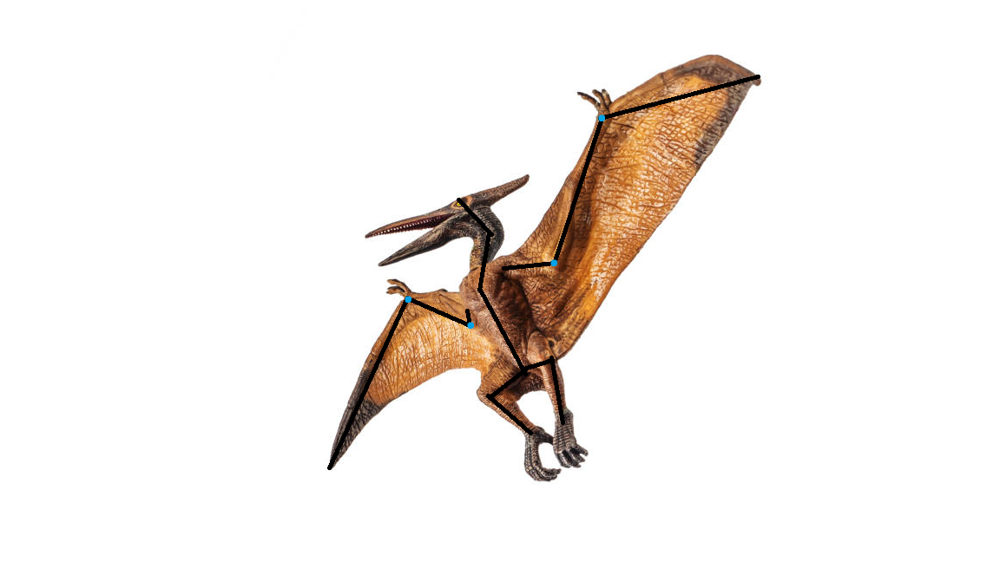

1. Concept Design
Defining the problem, selecting a form, and scoping the prototype

Defining the Brief
The starting point for this project was an open-ended brief: to design and prototype a solution with some form of actuation. For initial ideas, a range of animals were discussed as candidates. A pterodactyl was ultimately selected, largely because of the distinctive structural properties of its wing anatomy (a large, thin membrane supported by an articulated skeletal frame) which fits the actuation challenge that was explored.

With the animal form chosen, the next question was context of use. A pterodactyl animatronic could serve several settings, and each implied a very different set of design priorities.
Use Case Selection
Three candidate use cases were considered: a museum exhibit, a theme park installation, and an educational resource for primary schools. Each was evaluated against practical criteria including anatomical accuracy, durability, maintenance, audience expectations, and budget implications.
A museum setting would require a high degree of anatomical accuracy, as visitors would likely include adults and students with some prior knowledge of palaeontology. This would heavily constrain the design and significantly increase both the complexity and cost of the build. A theme park installation, while more forgiving on accuracy, would require the prototype to withstand a rigorous public environment — (a much greater engineering effort than a single academic prototype allows).
Primary school education was selected as the target use case. Children of primary school age are engaged primarily through visual impact rather than a scientiic purpose, which permits a degree of creative freedom in the anatomical design. Crucially, this context also carries a lower maintenance burden: the prototype could be housed in a protective display case, removing the need to engineer for direct handling or environmental exposure. A cased animatronic that visibly flaps its wings is sufficient to achieve the engagement objective, and that keeps the scope achievable within the time and resource constraints.
Design Scope and Actuation
With the use case established, the actuation needed to be defined. The module brief required some form of mechanical actuation. Several candidates were considered: neck movement, jaw articulation, and wing flapping. Wing flapping was selected as the primary goal because it is the most visually dramatic and immediately legible motion for a pterodactyl (especially for a young audience). A visibly flapping wing communicates the concept of an animatronic more effectively than a subtle jaw or neck movement.
Additional actuation — neck movement and jaw articulation — was documented as a stretch goal. A purpose-built display stand or suspension rig was similarly considered. Both were scoped out at this stage due to time constraints.
Demographic Considerations and Accuracy
The primary school demographic directly influenced several design parameters. Anatomical accuracy was treated as a soft constraint rather than a hard requirement. This is a justifiable position: the prototype is an educational engagement tool, not a biological reconstruction. Gaps in colour continuity, slightly exaggerated proportions, or simplified surface texture are acceptable (and possibly preferable) for an audience of young children, where visual impact is the priority.
The decision to case the prototype is also consistent with the target demographic. Children in a school setting cannot reliably be prevented from handling or damaging an exposed model. A display case protects the mechanism from accidental damage while simultaneously framing the animatronic in a museum-style context that reinforces its educational purpose.
References
- Dino Walk Science & Technology Inc. (2025) Where are animatronic dinosaurs commonly used? Available at: https://www.dino-walk.com/news/where-are-animatronic-dinosaurs-commonly-used.html (Accessed: 14 May 2026).
- Johnson, F. (2025) Who goes to museums the most? Unpacking the demographics, motivations, and trends of museum visitors. Wonderful Museums. Available at: https://www.wonderfulmuseums.com/museum/who-goes-to-museums-the-most (Accessed: 14 May 2026).